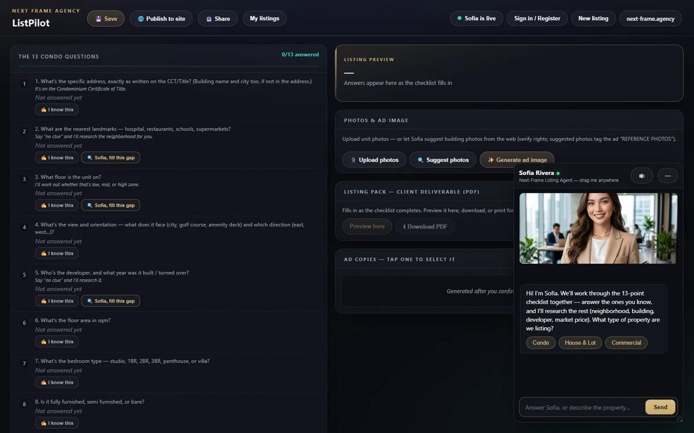
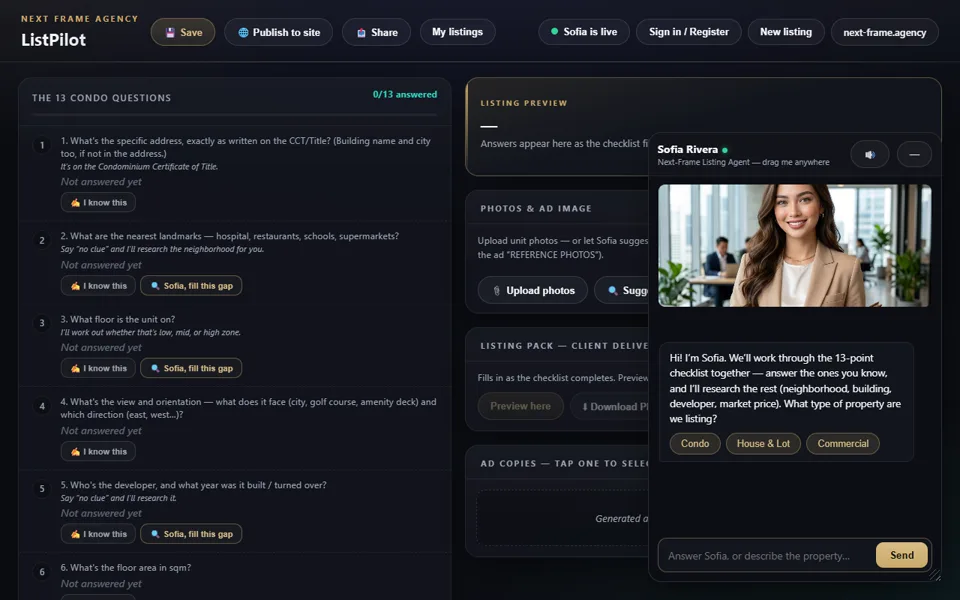

The listing team you can't afford — free.
- Nothing to install. Free.
- A published page before the call ends
- A price you can defend
Seven plates your agent puts on. One thread, a priced and published listing in ten minutes.

"No clue" is a valid answer.
Reads the building for you.
Real comparable listings. You confirm the number.
Portal, social, buyer message.
Leave-behind, formatted and emailed.
Ad image, shot list, presenter voice.
A live page and a registry number, one tap.




The same agent, running right now. Bring a property you know.

First wake takes a few seconds.


Bring one property. We'll build the listing in the room.